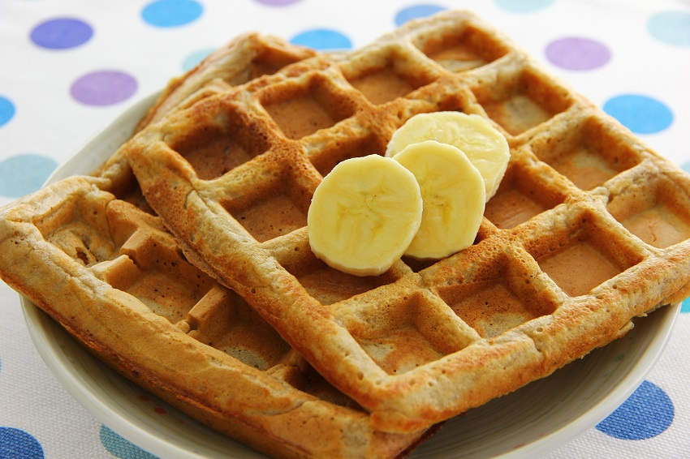

How To Make A Waffle |
|---|
A waffle is a simple thing to make for most, but there is some confusion as to how to prepare the best waffle. Here is a quick recipe for a basic waffle: |
| Ingredients: 2 cups all purpose flour 2 table spoons sugar 4 teaspoon baking powder 1 teaspoon salt 2 eggs 1 1/2 cups warm milk 6 table spoons unsalted butter, melted 1 teaspoon vanilla extract |
| Instructions: 1. Preheat waffle iron. 2. In a large bowl combine the flour, sugar, baking powder and salt and whisk to combine. 3. In a separate small bowl whisk the eggs and stir in the warm milk, melted butter and vanilla extract. 4. Pour the wet ingredients into the dry and whisk until blended. 5. Ladle the batter into the preheated waffle iron and cook until the waffles are golden brown and crisp |
|  |